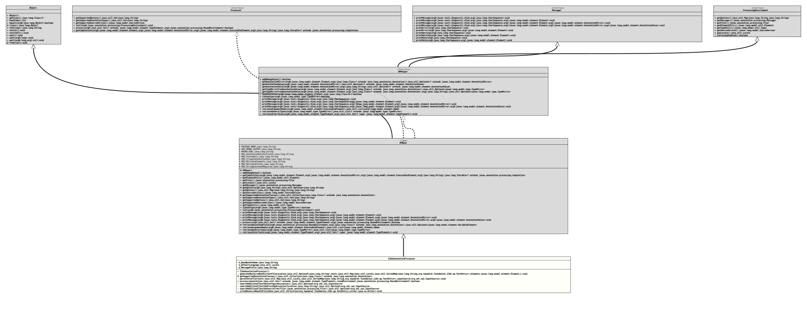

Package org.tquadrat.foundation.i18n.ap
Class I18nAnnotationProcessor
java.lang.Object
org.tquadrat.foundation.ap.APBase
org.tquadrat.foundation.i18n.ap.I18nAnnotationProcessor
- All Implemented Interfaces:
Messager,ProcessingEnvironment,Processor,APHelper
@ClassVersion(sourceVersion="$Id: I18nAnnotationProcessor.java 997 2022-01-26 14:55:05Z tquadrat $")
@API(status=STABLE,
since="0.0.1")
@SupportedSourceVersion(RELEASE_17)
@SupportedOptions({"org.tquadrat.foundation.ap.addDebugOutput","org.tquadrat.foundation.ap.maven.goal","org.tquadrat.foundation.i18n.ap.textLocation"})
public class I18nAnnotationProcessor
extends APBase
The annotation processor for the module
org.tquadrat.foundation.i18n.- Author:
- Thomas Thrien (thomas.thrien@tquadrat.org)
- Version:
- $Id: I18nAnnotationProcessor.java 997 2022-01-26 14:55:05Z tquadrat $
- Since:
- 0.0.1
- UML Diagram
-

UML Diagram for "org.tquadrat.foundation.i18n.ap.I18nAnnotationProcessor"
{kind=link}
-
Field Summary
FieldsModifier and TypeFieldDescriptionprivate StringThe base bundle name.private LocaleThe default language.private StringThe message prefix.Fields inherited from class org.tquadrat.foundation.ap.APBase
ADD_DEBUG_OUTPUT, MAVEN_GOAL, MSG_AnnotationOnlyForFields, MSG_FieldsOnly, MSG_IllegalAnnotationUse, MSG_MultipleElements, MSG_MultipleFields, MSG_StringConstantRequired, PACKAGE_NAME -
Constructor Summary
Constructors -
Method Summary
Modifier and TypeMethodDescriptionprivate final voidgenerateResourceBundle(Optional<String> textFileLocation, Map<Locale, SortedMap<String, TextEntry>> texts, Element... elements) Generates the resource bundles from the given texts.protected final Collection<Class<? extends Annotation>>private final voidparseTextsFile(Map<Locale, SortedMap<String, TextEntry>> texts, InputSource inputSource) Parses a texts XML file.final booleanprocess(Set<? extends TypeElement> annotations, RoundEnvironment roundEnvironment) private final Optional<InputSource>Searches the file with the additional texts ("AdditionalTexts.xml") on the location configured with the annotation processor option "org.tquadrat.foundation.i18n.ap.textLocation".private final Optional<InputSource>Searches the file with the additional texts ("AdditionalTexts.xml") on the location provided by the annotation@UseAdditionalTexts.private final Optional<InputSource>Searches the file with the additional texts ("AdditionalTexts.xml") on the location determined byStandardLocation.SOURCE_PATH.private final voidwriteResourceBundleFile(Collection<TextEntry> data, Writer writer) Write the resource bundle properties to the givenWriter.Methods inherited from class org.tquadrat.foundation.ap.APBase
addDebugOutput, getCompletions, getElementUtils, getFiler, getLocale, getMessager, getOption, getOptions, getSourceVersion, getSupportedAnnotationTypes, getSupportedOptions, getSupportedSourceVersion, getTypeUtils, init, isEnumType, printMessage, printMessage, printMessage, printMessage, retrieveAnnotatedField, retrieveArgumentNames, retrieveGenericTypes, retrieveInterfacesMethods inherited from class java.lang.Object
clone, equals, finalize, getClass, hashCode, notify, notifyAll, toString, wait, wait, waitMethods inherited from interface org.tquadrat.foundation.ap.APHelper
getAnnotationMirror, getAnnotationValue, getAnnotationValue, getTypeMirrorFromAnnotationValue, getTypeMirrorFromAnnotationValue, hasAnnotationMethods inherited from interface javax.annotation.processing.ProcessingEnvironment
isPreviewEnabled
-
Field Details
-
m_BaseBundleName
The base bundle name. -
m_DefaultLanguage
The default language. -
m_MessagePrefix
The message prefix.
-
-
Constructor Details
-
I18nAnnotationProcessor
public I18nAnnotationProcessor()Creates a newI18NAnnotationProcessorinstance.
-
-
Method Details
-
generateResourceBundle
private final void generateResourceBundle(Optional<String> textFileLocation, Map<Locale, SortedMap<String, TextEntry>> texts, Element... elements) Generates the resource bundles from the given texts.- Parameters:
textFileLocation- The provided location for "AdditionalTexts.xml".texts- The texts.elements- The annotated elements.
-
getSupportedAnnotationClasses
- Specified by:
getSupportedAnnotationClassesin classAPBase
-
parseTextsFile
private final void parseTextsFile(Map<Locale, SortedMap<String, throws IOException, ParserConfigurationException, SAXExceptionTextEntry>> texts, InputSource inputSource) Parses a texts XML file.- Parameters:
texts- The data structure that takes the parsed texts.inputSource- The XML input stream.- Throws:
IOException- Reading the input failed.ParserConfigurationException- It was not possible to obtain aSAXParserFactoryor it could not be configured properly.SAXException- Parsing the input file failed.
-
process
public final boolean process(Set<? extends TypeElement> annotations, RoundEnvironment roundEnvironment) -
searchAdditionalTextsOnConfiguredLocation
Searches the file with the additional texts ("AdditionalTexts.xml") on the location configured with the annotation processor option "org.tquadrat.foundation.i18n.ap.textLocation".- Returns:
- An instance of
Optionalthat holds theInputSourcefor the file.
-
searchAdditionalTextsOnProvidedLocation
Searches the file with the additional texts ("AdditionalTexts.xml") on the location provided by the annotation@UseAdditionalTexts.- Parameters:
location- The location for the file with the additional texts.- Returns:
- An instance of
Optionalthat holds theInputSourcefor the file.
-
searchAdditionalTextsOnSourceTree
Searches the file with the additional texts ("AdditionalTexts.xml") on the location determined byStandardLocation.SOURCE_PATH.- Parameters:
filer- TheFilerinstance that provides theSOURCE_PATHlocation.- Returns:
- An instance of
Optionalthat holds theInputSourcefor the file.
-
writeResourceBundleFile
private final void writeResourceBundleFile(Collection<TextEntry> data, Writer writer) throws IOException Write the resource bundle properties to the givenWriter.- Parameters:
data- The properties.writer- The targetWriterinstance.- Throws:
IOException- Writing the resource bundle file failed.
-